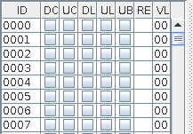
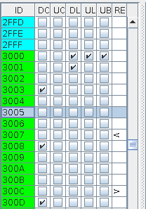

JC64dis Memory Area
Once a file that are not a MUS is processed, in the memory area there will appears a table that contains all $FFFF C64 memory addresses in sequences with different colors and flag information in the columns.

The meanings of columns are:
- ID: the memory address location number in Hex format.
- DC: the Dasm automatic row comment assigned to this memory location. If it is set, than by passing with the mouse over it will show the comment itself.
- UC: the user manual row comment assigned to this memory location. If it is set, than by passing with the mouse over it will show the comment itself.
- DL: the Dasm label name assigned to this memory location. The program generate it as Wxxxx (where xxxx is the memory address in Hex). If it is set, than by passing with the mouse over it will show the label itself
- UL: the user label name assigned to this memory location. If it is set, than by passing with the mouse over it will show the label itself
- UB: the user global comment assigned to this memory location. If it is set, than by passing with the mouse over it will show the global comment itself
- RE: it indicates that the location is related to another, so it can contains the value +, -, < and >. By passing with the mouse over it will show the related address.
The RE area shows even the kind of data selected (it is hidden if there are +, - < and >) according with a char:
- B data marked as Byte (Hex)
- D data marked as Byte (Decimal)
- Y data marked as Byte (Binary)
- R data marked as Byte (Char)
- W data marked as Word
- P data marked as Word Swapped
- E data marked as Tribyte
- L data marked as Long
- A data marked as Address
- S data marked as Stack Word
- O data marked as Monocromatic Sprite definitions
- F data marked as Multicolor Sprite definitions
- T data marked as Text
- N data marked as Text with number of byte before
- Z data marked as Text terminated with 0
- M data marked as Text with high bit 1
- H data marked as Text with high bit and shiffed
- C data marked as Text converted to screen code
- I data marked as Text coverted to petscii code
The colors instead could be:
- White: this indicates that the memory address is outside the binary data read from the file. Assigning label or comments to this area works different from the inside area (all other colors means an area inside the binary file)
- Light gray: this area are undefined, or in other words, we did not say if it is a code to execute or a data to being read by other codes. Disassembler threats code and data area in different manner. In option, you can select if an undefined area must be used as code or as data by default, but during your analysis you must declare the right type as soon as you understand the code.
- Light blue: this area is of data.
- Green: this area is of code.
- Red: this area is of junk
